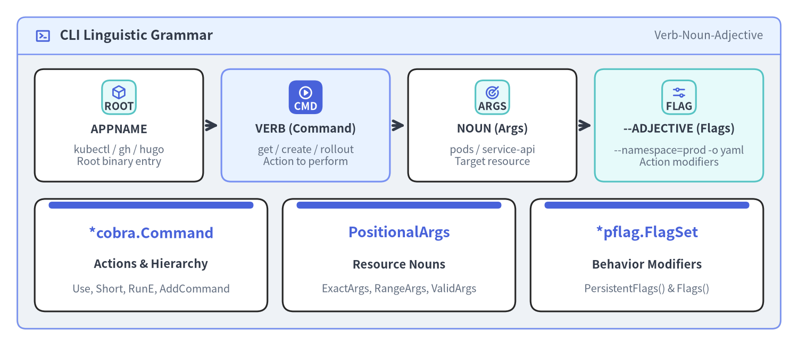
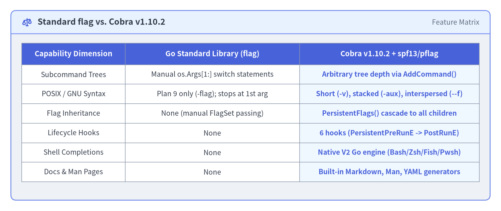

Why Cobra & CLI Design Philosophy
Great command-line interfaces feel like natural human sentences rather than cryptic lists of flags. Created by Steve Francia (spf13) for Hugo and rapidly adopted by Kubernetes (kubectl), GitHub (gh), Docker, and Helm, Cobra (v1.10.2) provides both a declarative controller for hierarchical subcommand trees and a POSIX/GNU-compliant flag parser (spf13/pflag). This page explains the linguistic philosophy behind Cobra, how it compares to Go's standard flag package, and its three foundational primitives: Commands, Args, and Flags.

Source Code
from drawlib.canvas import save, setup
from drawlib.icons import phosphor
from drawlib.smartarts import CardList, KpiCards, Panel
from drawlib.styles import Styles
setup(width=184, height=80, dpi=150)
outer = Panel(
"CLI Linguistic Grammar",
"Verb-Noun-Adjective",
style=Styles.Neutral.patch(shape_r=2.0),
header_style=Styles.PrimaryNeutral.patch(shape_line_width=1.2),
text_style=Styles.DarkBold.patch(text_size=12.0),
description_style=Styles.Muted.patch(text_size=10.0),
icon=phosphor.terminal_window,
icon_style=Styles.PrimaryBold,
header_variant="filled",
header_height=8.5,
)
outer.draw((4.0, 4.0), width=176.0, height=72.0)
grammar = CardList(
style=Styles.White,
text_style=Styles.DarkBold.patch(text_size=10.5),
description_style=Styles.Muted.patch(text_size=9.5),
badge_shape="rounded_rect",
badge_style=Styles.SecondaryNeutral,
badge_text_style=Styles.DarkBold.patch(text_size=9.5),
icon_style=Styles.PrimaryBold,
direction="horizontal",
show_arrows=True,
arrow_style=Styles.DarkBold,
spacing=4.0,
)
grammar.add(
"APPNAME",
"kubectl / gh / hugo\nRoot binary entry",
badge_text="ROOT",
icon=phosphor.cube,
)
grammar.add(
"VERB (Command)",
"get / create / rollout\nAction to perform",
badge_text="CMD",
icon=phosphor.play_circle,
style=Styles.PrimaryNeutral,
badge_style=Styles.PrimaryFlat,
badge_text_style=Styles.WhiteBold.patch(text_size=9.5),
icon_style=Styles.WhiteBold,
)
grammar.add(
"NOUN (Args)",
"pods / service-api\nTarget resource",
badge_text="ARGS",
icon=phosphor.target,
)
grammar.add(
"--ADJECTIVE (Flags)",
"--namespace=prod -o yaml\nAction modifiers",
badge_text="FLAG",
icon=phosphor.sliders_horizontal,
style=Styles.SecondaryNeutral,
)
grammar.draw(xy=(8.0, 38.0), width=168.0, height=26.0)
primitives = KpiCards(
style=Styles.White,
metric_style=Styles.PrimaryBold.patch(text_size=13.0),
text_style=Styles.DarkBold.patch(text_size=10.5),
description_style=Styles.Muted.patch(text_size=9.5),
accent_style=Styles.PrimaryFlat,
accent_position="top_bar",
metric_layout="top_stack",
spacing=3.5,
)
primitives.add("*cobra.Command", "Actions & Hierarchy", "Use, Short, RunE, AddCommand")
primitives.add("PositionalArgs", "Resource Nouns", "ExactArgs, RangeArgs, ValidArgs")
primitives.add("*pflag.FlagSet", "Behavior Modifiers", "PersistentFlags() & Flags()")
primitives.draw(xy=(8.0, 8.0), width=168.0, height=26.0, columns=3)
save()
1. The APPNAME VERB NOUN --ADJECTIVE Sentence Grammar
Predictable CLI tools follow a consistent grammatical pattern modeled on imperative sentences:
APPNAME VERB NOUN --ADJECTIVE
kubectl get pods --namespace=prod --output=yaml
gh pr create --base=main --fill
hugo server --port=1313 --buildDrafts
docker container inspect web --format='{{.State.Status}}'
| Grammatical Role | Cobra Primitive | Example Token | Responsibility |
|---|---|---|---|
APPNAME |
Root *cobra.Command |
kubectl, cloudctl |
Establishes the top-level binary identity, global persistent flags (--config, --kubeconfig), and shared context.Context. |
VERB |
Child *cobra.Command |
get, apply, rollout restart |
Represents the action to execute. Complex CLIs nest multi-word verbs (rollout -> restart) via parent.AddCommand(child). |
NOUN |
args []string (Command.Args) |
pods, my-cluster |
Identifies the target object or resource the verb acts upon, validated before execution by PositionalArgs (ExactArgs(1), MinimumNArgs(1)). |
--ADJECTIVE |
spf13/pflag (Flags() / PersistentFlags()) |
--namespace prod, -o json |
Modifies how the action executes, supporting POSIX short flags (-n), GNU long flags (--namespace), and flag group constraints. |
Design Rule — When to Use Positional
Argsvs.--flags: Use a positional argument (NOUN) when a command operates on one primary, obvious subject (cloudctl delete cluster-a). Use flags (--ADJECTIVE) for optional modifiers, filters, output formats, or multi-field configuration (--force,--timeout=30s,--region=ap-northeast-1).
2. Standard Library flag vs. spf13/cobra + spf13/pflag
Go's built-in flag package is intentionally minimal and follows Plan 9 flag conventions rather than POSIX/GNU standards. As soon as a CLI grows beyond a single flat command, flag requires significant boilerplate:

Source Code
from drawlib.canvas import save, setup
from drawlib.icons import phosphor
from drawlib.preset_colors import CssColors
from drawlib.smartarts import Panel, Table
from drawlib.styles import Colors, Styles
setup(width=184, height=78, dpi=150)
outer = Panel(
"Standard flag vs. Cobra v1.10.2",
"Feature Matrix",
style=Styles.Neutral.patch(shape_r=2.0),
header_style=Styles.PrimaryNeutral.patch(shape_line_width=1.2),
text_style=Styles.DarkBold.patch(text_size=12.0),
description_style=Styles.Muted.patch(text_size=10.0),
icon=phosphor.scales,
icon_style=Styles.PrimaryBold,
header_variant="filled",
header_height=8.5,
)
outer.draw((4.0, 4.0), width=176.0, height=70.0)
tbl = Table(
cell_style=Styles.White,
text_style=Styles.Dark.patch(text_size=10.0),
header_cell_style=Styles.PrimaryFlat,
header_text_style=Styles.WhiteBold.patch(text_size=10.5),
border_style=Styles.MutedThin,
)
tbl.set_style_cell_evenodd(
even_color=Colors.Light,
even_text_style=Styles.Dark.patch(text_size=10.0),
odd_color=Colors.White,
odd_text_style=Styles.Dark.patch(text_size=10.0),
)
tbl.set_style_cell_header(
background_color=Styles.PrimaryFlat.shape_fill_color,
text_style=Styles.WhiteBold.patch(text_size=10.5),
)
tbl.set_style_cell(
background_color=CssColors.AliceBlue,
text_style=Styles.PrimaryBold.patch(text_size=10.0),
rows=[1, 2, 3, 4, 5, 6],
columns=[2],
)
rows = [
["Capability Dimension", "Go Standard Library (flag)", "Cobra v1.10.2 + spf13/pflag"],
["Subcommand Trees", "Manual os.Args[1:] switch statements", "Arbitrary tree depth via AddCommand()"],
["POSIX / GNU Syntax", "Plan 9 only (-flag); stops at 1st arg", "Short (-v), stacked (-aux), interspersed (--f)"],
["Flag Inheritance", "None (manual FlagSet passing)", "PersistentFlags() cascade to all children"],
["Lifecycle Hooks", "None", "6 hooks (PersistentPreRunE -> PostRunE)"],
["Shell Completions", "None", "Native V2 Go engine (Bash/Zsh/Fish/Pwsh)"],
["Docs & Man Pages", "None", "Built-in Markdown, Man, YAML generators"],
]
tbl.draw_flexible(
xy=(8.0, 62.0),
column_widths=[38.0, 64.0, 66.0],
row_heights=[8.0, 7.2, 7.2, 7.2, 7.2, 7.2, 7.2],
data=rows,
align="top_left",
)
save()
Why the POSIX/GNU Difference Matters in Practice
With Go's standard flag package, flag parsing halts immediately at the first non-flag positional argument:
# With Go's standard "flag" package:
$ mytool --verbose deploy-target
# -> "--verbose" is parsed as true, args = ["deploy-target"]
$ mytool deploy-target --verbose
# -> SURPRISE! "--verbose" is NOT parsed as a flag; args = ["deploy-target", "--verbose"]!
Because Cobra uses spf13/pflag under the hood, users can place flags before or after positional arguments (cloudctl deploy prod --timeout=30s or cloudctl --timeout=30s deploy prod), stack single-letter boolean flags (-la), and terminate flag parsing explicitly with -- when passing raw arguments to a child process.
3. Core Primitives Inside cobra.Command
Every node in a Cobra CLI—whether it is the root binary, a category grouping node (cloudctl cluster), or a leaf action (cloudctl cluster create)—is represented by the same cobra.Command struct:
cmd := &cobra.Command{
// 1. Identity & Usage Grammar
Use: "create <cluster-name>",
Aliases: []string{"add", "provision"},
Short: "Provision a new managed Kubernetes cluster",
Long: "Provision a regional or zonal Kubernetes cluster with node pools.",
Example: " cloudctl cluster create prod-east --nodes 5 --region us-east-1",
// 2. Positional Argument Validation (Nouns)
Args: cobra.ExactArgs(1),
ValidArgs: []cobra.Completion{"dev-cluster", "staging-cluster", "prod-cluster"},
// 3. Execution Lifecycle Hook (Verb Action)
RunE: func(cmd *cobra.Command, args []string) error {
clusterName := args[0]
cmd.Printf("Provisioning cluster %q...\n", clusterName)
return nil
},
}
How the Three Primitives Interact at Runtime
- Command Discovery (
Find/Traverse): WhenrootCmd.Execute()runs, Cobra strips known flags fromos.Args[1:]and walks downc.commandsmatchingCommand.Name()(the first word ofUse, e.g.,"create") orCommand.Aliases. - Flag Merging & Parsing (
ParseFlags): Once the target leafCommandis resolved, Cobra mergesPersistentFlags()from all ancestor commands with the target command's localFlags()and parses the command-line tokens viapflag. - Positional Validation (
ValidateArgs): After flags are stripped, the remaining non-flag arguments (c.Flags().Args()) are validated againstCommand.Args(e.g.,cobra.ExactArgs(1)), followed by required-flag checks (ValidateRequiredFlags()) and mutual-exclusion group checks (ValidateFlagGroups()). - Hook & Action Execution (
execute): Finally, Cobra runsPersistentPreRunE,PreRunE,RunE,PostRunE, andPersistentPostRunEin sequence, passing(cmd, argWoFlags).
4. Cloud-Native Ecosystem Adoption
Studying how flagship open-source projects use Cobra reveals proven patterns that we apply throughout this guide:
| Project | CLI Binary | Notable Cobra Architecture Pattern |
|---|---|---|
| Kubernetes | kubectl |
Pioneered genericclioptions.IOStreams and the Complete() -> Validate() -> Run() *Options struct lifecycle (covered in Chapter 2). |
| GitHub CLI | gh |
Uses a cmdutil.Factory dependency container passed to every NewCmd* constructor alongside rich ValidArgsFunction completions. |
| Helm | helm |
Combines PersistentPreRunE environment initialization with custom command groups (AddGroup) and dynamic plugin discovery. |
| Hugo | hugo |
Origin of Cobra and Viper; binds hierarchical configuration files (hugo.toml) and environment variables to pflag sets. |
| Docker CLI | docker |
Uses TraverseChildren: true and SetGlobalNormalizationFunc to manage top-level engine flags alongside nested management commands. |
Next Steps
Continue to Quickstart & First Subcommand Tree to initialize a Go module with spf13/cobra@v1.10.2 and build a working multi-command CLI with rootCmd, versionCmd, and serveCmd.